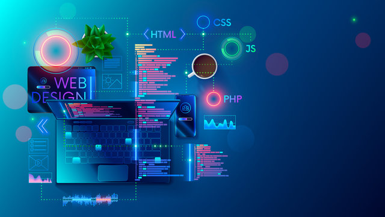
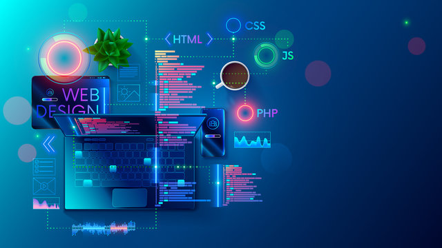

At RAYY Technologies, our web development services are designed to deliver top-notch digital experiences that drive business success. We employ the latest technologies and industry best practices to create visually stunning, highly functional, responsive websites. Our expert developers work closely with clients to understand their goals and tailor solutions that meet their needs.
What sets our web development services apart is our commitment to quality, innovation, and customer satisfaction. We prioritize user experience, ensuring that our websites are not only aesthetically pleasing but also intuitive and easy to navigate. Our rigorous testing processes guarantee that each site is secure, fast, and reliable. By staying ahead of industry trends and continuously improving our skills, we provide cutting-edge solutions that help our clients stand out in the digital landscape. Choose RAYY Technologies for web development services that are a cut above the rest.
Software Development
At RAYY Technologies, our software development services are designed to deliver robust, scalable, and high-performance solutions tailored to meet the unique needs of our clients. Our team of experienced programmers excels in creating custom software applications that enhance efficiency, streamline operations, and drive business growth.
What makes our software development services top-notch is our unwavering commitment to excellence and innovation. We employ agile methodologies, ensuring flexibility and rapid delivery of high-quality software. Our developers are proficient in a wide range of programming languages and frameworks, enabling us to choose the best tools for each project. We prioritize clear communication and collaboration with clients, ensuring that their vision is fully realized. Rigorous testing and quality assurance processes guarantee that our software is reliable, secure, and user-friendly. By staying at the forefront of technological advancements, RAYY Technologies provides cutting-edge software solutions that empower businesses to thrive in a competitive landscape.
Database Designing
At RAYY Technologies, our database designing services are engineered to optimize data management, enhance accessibility, and ensure robust security. We specialize in creating efficient and scalable database systems tailored to meet the specific requirements of each client, whether they need a simple database or a complex, distributed data environment.
What sets our database designing services apart is our dedication to precision, performance, and innovation. Our expert database architects utilize the latest technologies and best practices to design systems that are both powerful and user-friendly. We focus on creating logical and physical database models that maximize efficiency, support seamless data integration, and provide high availability. Rigorous testing and optimization processes ensure that our databases perform at their best under all conditions. By prioritizing data integrity, security, and scalability, RAYY Technologies delivers top-notch database solutions that empower businesses to make informed decisions and achieve their strategic objectives.

 
